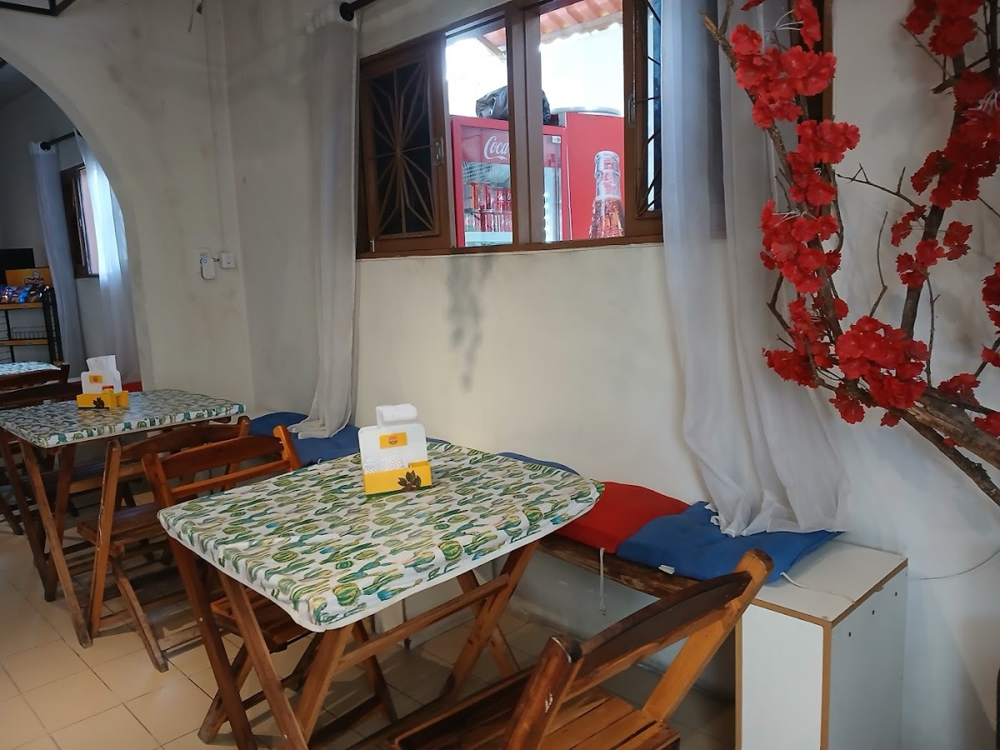

Av. Portugal, 480 · Universitário
Comida de casa, com cheiro de quintal.
Feijão, carne de sol, cuscuz, macaxeira e queijo coalho feitos com afeto, num jardim colonial no coração do Universitário. Almoço e jantar no self-service sem balança.
- 4,4 200 avaliações no Google
- Sem balançavocê monta o prato

& jantar

Self-service
Monte seu prato do seu jeito.
Buffet servido com carinho no almoço e no jantar, com variedade de carnes, acompanhamentos regionais, saladas fresquinhas e sobremesa. Sem balança: você paga um valor fixo e come à vontade.
No buffet hoje
Dica de quem já foi: chegue cedo, o almoço costuma encher.
À la carte
Do caldinho à picanha na tábua.
Alguns destaques do cardápio. Pratos principais servem 1 ou 2 pessoas.

1 pessoa2 pessoas
- 34,9963,99
Carne de sol
Feijão, arroz, purê ou fritas, farofa e vinagrete
- 37,9967,99
Picanha fatiada
Feijão, arroz, purê ou fritas, farofa e vinagrete
- 31,9958,99
Costela bovina no bafo
Feijão, arroz, purê ou fritas, farofa e vinagrete
- 27,9950,99
Feijoada sáb e dom
Arroz, farofa, vinagrete e couve
- 26,9947,99
Parmegiana de frango
Muçarela, macarrão ao sugo e purê
- —61,99
Mistão
Carne, carne de sol, toscana, frango e queijo coalho
- 31,99
Carne de sol com coalho e fritas
Queijo coalho assado e batata frita
- 19,99
Macaxeira gourmet
Porção grande ao creme de queijo e bacon
- 26,99
Camarão ao alho e óleo
Porção de aproximadamente 350 g
- 8,99
Caldinho de feijão
Preto ou mulatinho, com ovo de codorna e calabresa
- 8,99
Espetinho de coalho
Com ervas e mel de engenho
- 16,00
Brusqueta tradicional
Molho de tomate especial e muçarela
- 9,99
Cuscuz com coalho e manteiga de garrafa
Individual
- 12,99
Cuscuz com charque guisada
Individual
- 6,00
Tapioca de coco e queijo coalho
Feita na hora
- 12,00
Pastel de queijo do reino
Unidade
- 7,00
Croissant tradicional
Unidade
- 16,99
Cartola
Banana, queijo, açúcar e canela
- 20,00
Lena Coffee
Café, leite condensado e vodka
- 18,00
Coquetel Quintal Azul
Curaçau blue, Schweppes e limão
- 20,00
Gin Tia Lena
Tanqueray com Red Bull melancia, tropical ou açaí
- 10,00
Caipirinha
Cachaça Pitú e limão
- 12,00
Caipifruta
Morango ou kiwi, Smirnoff e leite moça
- 15,00
Tropical refrescante sem álcool
Morango, limão e água de coco
Preços em reais, sujeitos a alteração. Confirme pelo WhatsApp.
Semana no Quintal
Todo dia tem um motivo pra vir.
O Quintal
Um jardim colonial pra comer sem pressa.
Restaurante, cafeteria, bar suspenso e jardim externo. Mural em xilogravura, música boa e aquele atendimento que faz a gente se sentir em casa. Todo mundo é bem-vindo por aqui.





Eventos
Sua comemoração no nosso quintal.
Aniversários, confraternizações, chás e encontros mais íntimos com comida regional, drinks e decoração de jardim. Conte o que você está planejando e a gente monta junto.
Quem foi, voltou
4,4 no Google
200 avaliações de quem já sentou no quintal.
“Self service sem balança, com grande variedade e preço bom. Vá cedo, porque está sempre bem movimentado. As sobremesas são deliciosas e tem uma cocada!”
Teresa Amorim · Local Guide
“Música boa, comida boa e barata. Ambiente acolhedor e aconchegante. E o atendimento é maravilhoso.”
Jullyett F.
“Equipe muito simpática e extremamente atenciosa. Comida com uma linda apresentação e muito, muito boa!”
Vanessa A.
“Muito boa a comida, ambiente limpo e agradável, muito bom atendimento, recomendo demais.”
Amaro Cabral Neto
Como chegar
Puxe uma cadeira, a casa é sua.
Confira os horários
Av. Portugal, 480 · UniversitárioCaruaru · PE · 55016-400
| Segunda a sábado | 11h às 21h |
|---|---|
| Domingo | 11h às 15h |